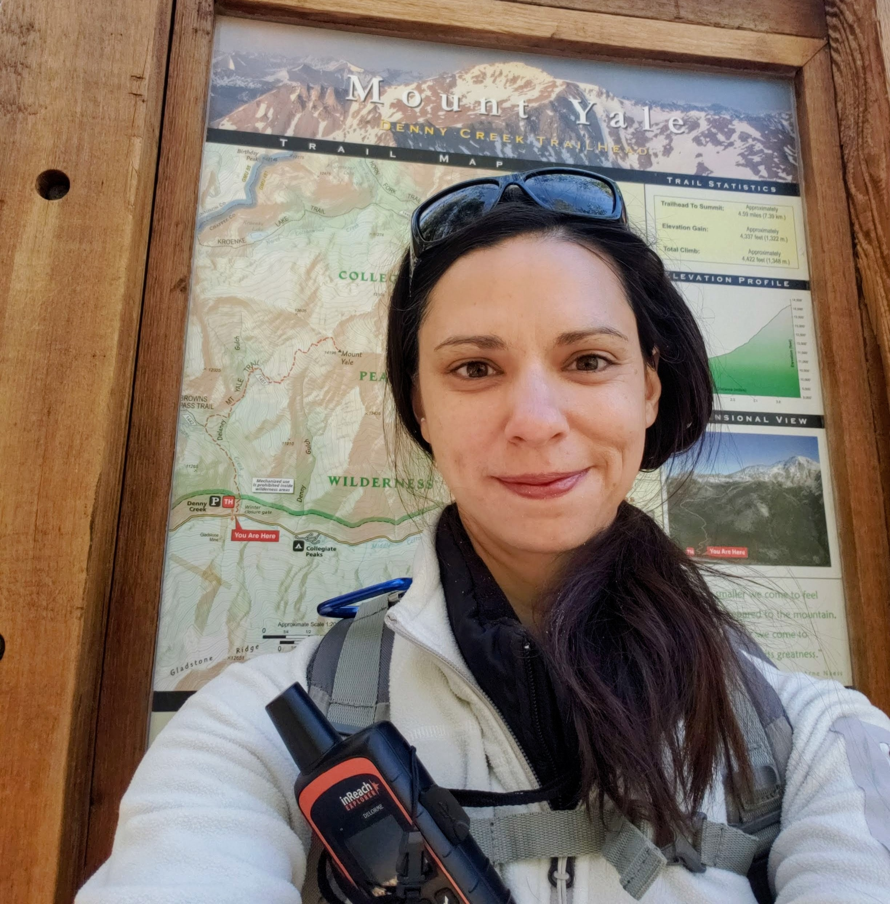

Resources for Trip Planning

Safety First
I learned the hard way that over-confidence is the best way to get into trouble.
Essential Gear
- GPS with emergency call feature
- Weather monitoring apps
- Trail-specific gear
What Jessica Likes

AllTrails Contributions
Active contributor documenting Colorado, Utah, and New Mexico trails.
Why She Hikes
Hiking became a way to decompress and get away from people. Being out on the trails reminds me to experience the little beautiful imperfections in life.
Stay Safe Out There
Safety Gear:
- GPS with emergency beacon
- Weather-appropriate layers
- First aid kit
- Extra water and snacks